天文望远镜基本知识
天文望远镜类型
- 折射望远镜
- 反射望远镜
- 折反式望远镜
折射与反射望远镜示意图：
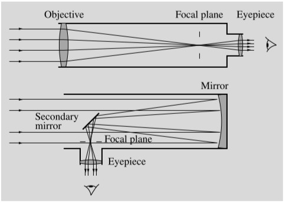
折射望远镜
最老的是伽利略式望远镜，使用的是一凸一凹的镜片。
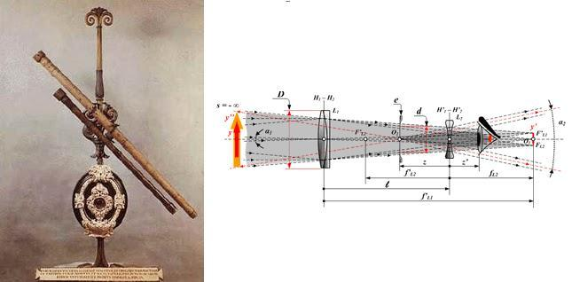
后来改进成两个凸透镜，但出现了另一个问题：色差(chromatic aberration)，即不同颜色聚焦在不同的焦点上，导致成像有色彩分离和偏差现象。
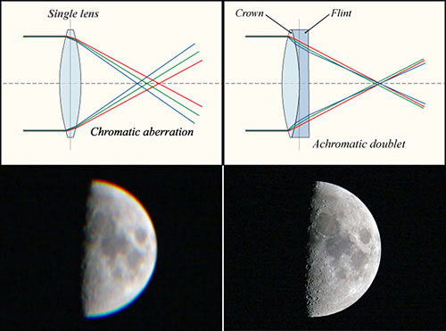
解决方法是加入一个或多个凸透镜从而消除色差的影响。可以分为普通消色差和复消色差望远镜。
由于复消色差望远镜如此优秀，其仍是拍摄的最佳选择，就是贵。
反射望远镜
分牛反和其他反，牛反在开头的示意图，卡塞格林反射镜如下：
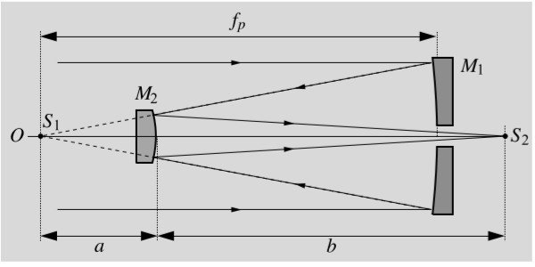
反射望远镜的问题有彗差(coma)和球差(spherical aberration)。
彗差是由于是轴外物点发出宽光束通过光学系统后，并不会聚一点，相对于主光线而是呈彗星状图形的一种失对称的像差。
球差是由于电磁透镜中心区域和边缘区域对电磁波会聚能力不同而造成的。
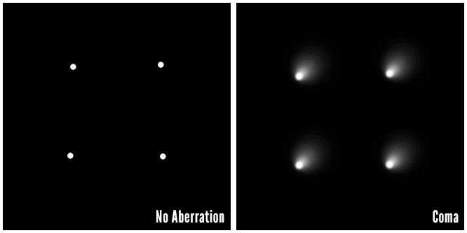
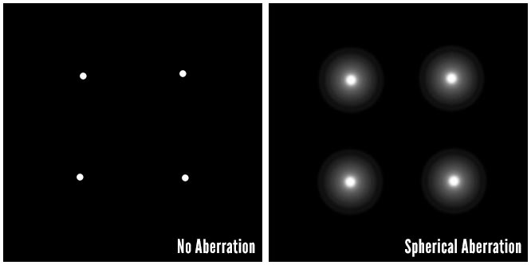
折反射望远镜
为了解决反射望远镜的种种问题，就需要在前面增加矫正镜。有两种不同的添加方式，对应两种不同的望远镜。
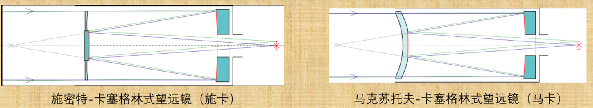
mounting 系统
实在不知道怎么翻译……
望远镜有两种 mounting 系统，即地平式及赤道式。对于普通望远镜来说赤道式的望远镜是最适合的，但对于大型望远镜来说，赤道式所承受的重量不够，且有软件的辅助，基本都采用地平式。
参数
基本参数
口径$D$：最重要的参数。
焦距$f$
目镜焦距 $f’$
- 人眼参数：瞳孔直径$d{\text{pupil}}=6\text{mm}$，对 555nm 光线最敏感。最小分辨角$e{\text{pupil}}\approx2’$。
推导参数
放大率
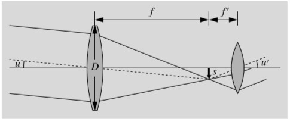
推导：放大率顾名思义即镜中看到的大小与实际物体角大小的比值。即：
焦比
$F=f/D$，通常写法 f/3.5,f/10 等等。这个数与望远镜收集光的数量相关。
理论视场
$\tan(\omega/2)=D/f$，及其小角近似。简单推导即可得。
分辨本领、最小分辨角
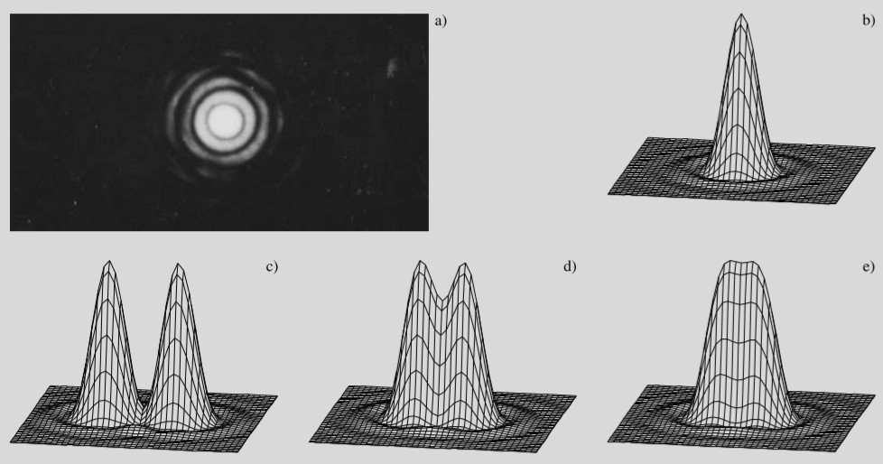
取$\lambda=550\text{nm}$，可得：$\theta(^”)=140/D(\text{mm})$。
底片比例尺
意为底片上$d$的长度相当于视场中$\omega$的角大小。推导：
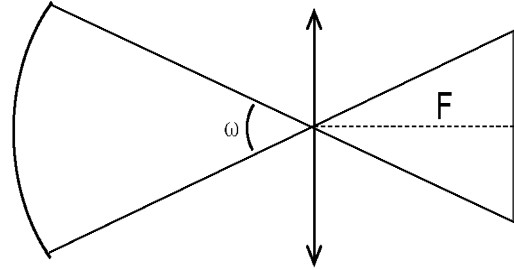
极限星等
推导：人眼极限星等 6，口径 6mm。
最大放大率
眼睛的最小分辨角/望远镜的最小分辨角即为最大放大率
最小放大率、出瞳口径
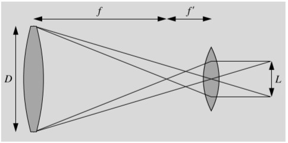
如图，出瞳口径$L$必须比瞳孔大小要小。
由$L\le d{\text{pupil}}$即可知$G\ge D/d{\text{pupil}}$
常识
影响观测的因素
seeing（视宁度）：大气的抖动。视宁度越好，大气抖动越少，观测条件越好。
接收器材
照相底片->光电倍增管->CCD（电子耦合器件）
量子效率逐渐提升，线性性逐渐增加，光子利用率逐渐增大。
还有另一类重要的观测方法即光谱。
有两种方法分光：棱镜分光和光栅分光。光栅分光的损耗率远远低于棱镜分光，因此基本都在用光栅分光。
波段观测
概况
波段分类：
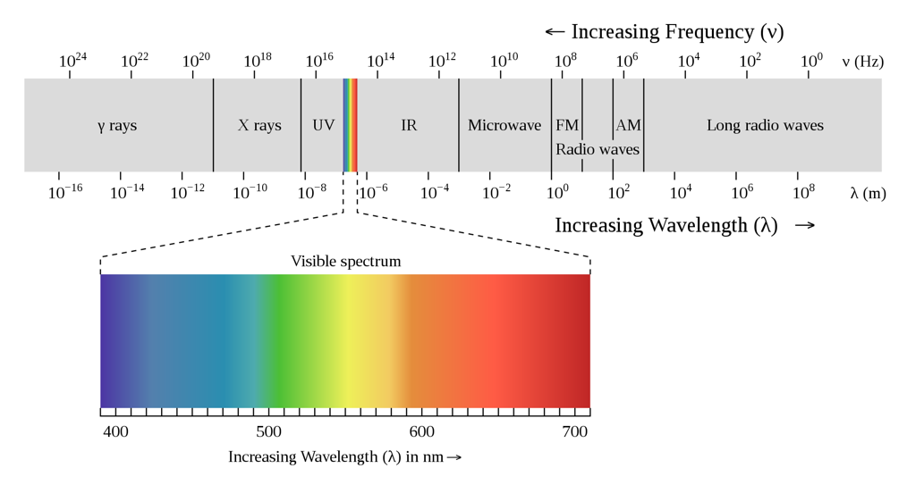
波段在大气中的通过率及相关信息：
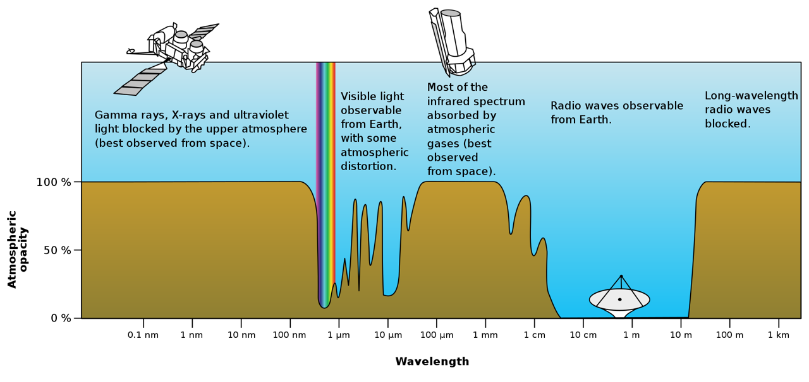
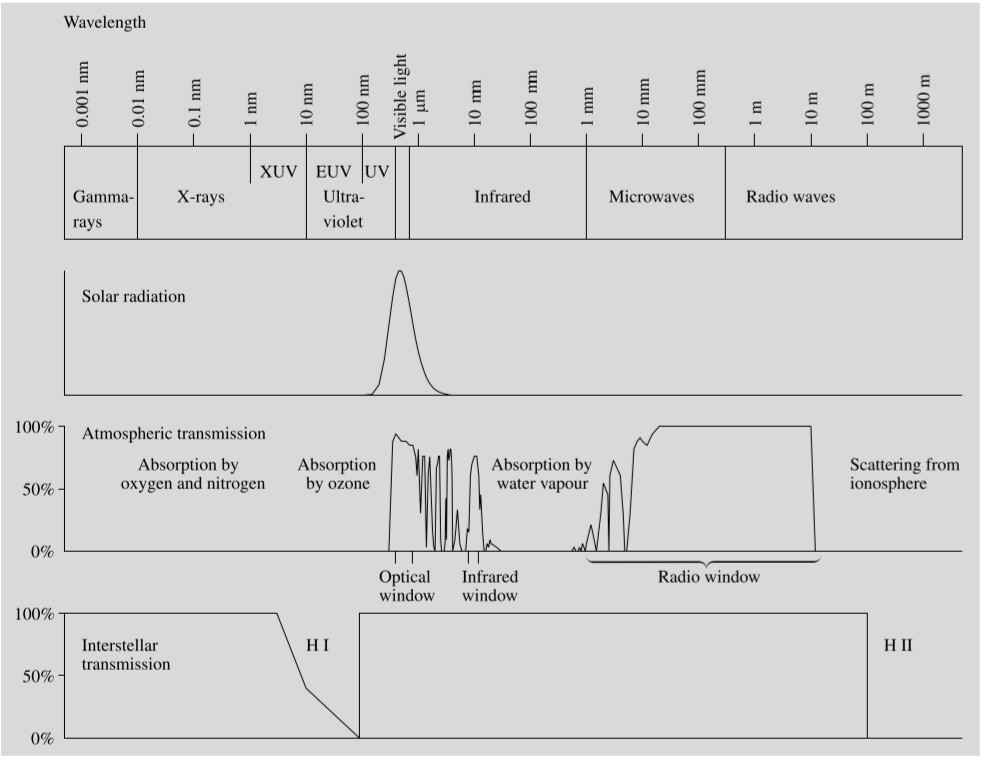
蟹状星云在不同波段下的相片：
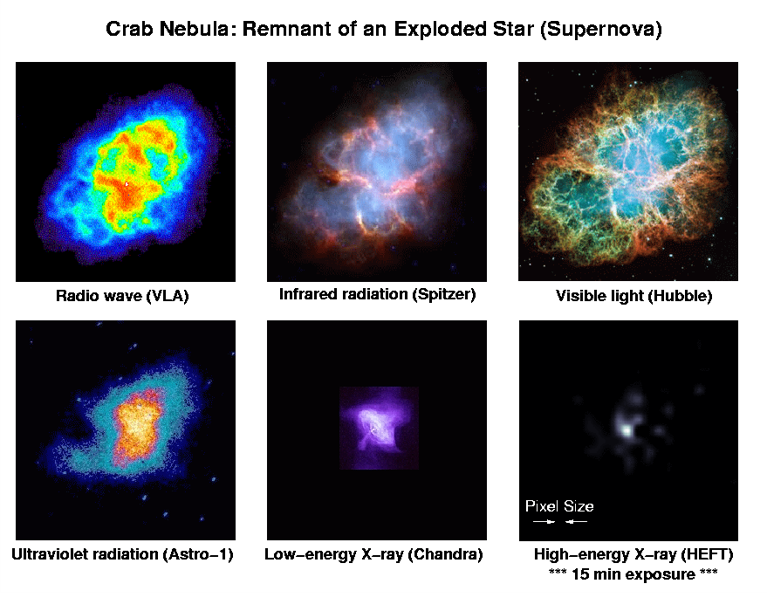
以下的例子都是大型望远镜。
射电
两种模式：steerable（可转动的）和不可转动的。
组合模式：单体和多体（使用干涉技术提升等效口径）
例子：
可转动的如飞马, green bank
不可转动如 FAST, Arecibo。这类望远镜其实并不是完全不可动，它可以将一部分球形变形为抛物线形从而接收信号并获得一部分的转向能力。
多体如 ALMA, VLA。
微波
微波与射电较为相似，但镜面更加光滑。
红外
和光学望远镜较为相似。
由于大气的阻隔，大部分是太空望远镜，只有少部分在高海拔地区的地面望远镜。
例子：
Herschel 太空望远镜，鸽王 James Webb 太空望远镜。
可见光
地面望远镜、太空望远镜。
分折射、反射。
最大的折射望远镜是在 Yerkes Observatory 的 1m 折射望远镜。
现在主流的大口径望远镜都是反射望远镜，有单体磨成的镜片和许多块单独镜面拼成，目前最大 10m，详情见望远镜排行榜。未来的大望远镜有 E-ELT 39m 及 TMT 30m。新技术有主动光学和有限的干涉。
太空望远镜最著名的就是 Hubble 望远镜。
紫外
分软紫外及硬紫外。
说实话，没啥著名的（
X 射线
分软 X 射线及硬 X 射线。
由于 X 射线极强的穿透性，导致传统的折射和反射类型望远镜都无法使用。
有两种解决方案：
1、grazing（掠射）。如瞳（反向调节最为致命），钱德拉 X 射线天文台。
2、做成桶状，直接接收。如 HXMT（慧眼）
$\gamma$射线
同样的使用掠射的方案。
著名的卫星有：swift（雨燕）卫星，Fermi（费米）伽马射线太空望远镜。
有一种间接观测的方法是观测通过$\gamma$射线与空气之间的切伦科夫效应发出的光，如 MAGIC 望远镜。
其他媒介
中微子
中微子与其他物质难以作用，但也不是完全不可作用。主要方法是探测中微子在重水中的切伦科夫辐射。
著名天文台：日本的神冈、南极的 IceCube。
引力波
原理是通过迈克尔逊干涉仪测量空间上的微小震荡从而观测引力波的发生。科学仪器：LIGO。
后记
望远镜介绍这里好多图都没有放，就是懒……以后有机会补上吧。